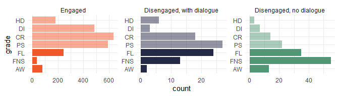

The goal of retention.helpers is to provide a few functions to help working with the CSU Retention Team’s data set, within the R environment.

Installation
You can install the development version from GitHub with:
# install.packages("devtools")
devtools::install_github("benwhicks/retention.helpers")You should also have the tidyverse installed and loaded to get the most out of the package:
The best way to interface with the data is through the data.csu.retention package. This package is not shared publicly, so you will need to obtain a copy of the R Package itself and build the package yourself. This is done in RStudio using Ctrl-Shift-B or by going to the Build pane (usually in the top right along with Environment) and selecting Install and Restart.
Overview of functions
Most of the functions are split into groups based on their use and prefix. The main families are add_ and read_.
add_*
The add_ family of functions create new columns in a data frame based on data in that table only. This means they are the most broadly useful as the do not require retention.data loaded. For example if offering is in the data frame (in the form ABC123_201990_W_D) then we can extract the subject ABC123, session 201990 or year 2019.
See an example of using the add_* functions
# Given some data with offering
dat_with_offering <- tibble(
offering = c("MTH100_189030_P_D", "PHL105_189060_B_I")
)
dat_with_offering
#> # A tibble: 2 × 1
#> offering
#> <chr>
#> 1 MTH100_189030_P_D
#> 2 PHL105_189060_B_I
# Add in subject and year from offering
dat_with_offering %>%
add_subject_from_offering() %>%
add_year_from_offering()
#> # A tibble: 2 × 3
#> offering subject year
#> <chr> <chr> <dbl>
#> 1 MTH100_189030_P_D MTH100 1890
#> 2 PHL105_189060_B_I PHL105 1890Loading the Data
This package is designed to work with the retention data set.
# ============================================= #
# Loading data via the retention.data package
# ============================================= #
library(data.csu.retention)Toy data
There is also a sample of this data available (simulated and resampled from the original data, so it does not represent any actual student data). These tables are included in this package and all start with the prefix toy_.
glimpse(toy_academic)
#> Rows: 19
#> Columns: 7
#> $ id <chr> "Student2", "Student2", "Student2", "Student2", "Studen…
#> $ session <dbl> 202230, 202230, 202260, 202130, 202130, 202160, 202160,…
#> $ subject <chr> "NRS312", "NRS313", "NRS327", "BMS291", "NRS211", "NRS2…
#> $ offering <chr> "NRS312_202230_B_D", "NRS313_202230_B_D", "NRS327_20226…
#> $ grade <fct> PS, DI, DI, CR, CR, CR, DI, DI, DI, CR, DI, CR, FL, FL,…
#> $ mark_bb <dbl> 0.6300, 0.7700, NA, 0.7220, 0.7080, 0.6600, 0.7560, 0.8…
#> $ grade_original <chr> "PS", "DI", "DI", "CR", "CR", "CR", "DI", "DI", "DI", "…There are two sets of tables that match. The first toy data set includes toy_academic, toy_enrolments and toy_student_course. The second set includes toy_academic_for_interventions, toy_flags and toy_interventions.